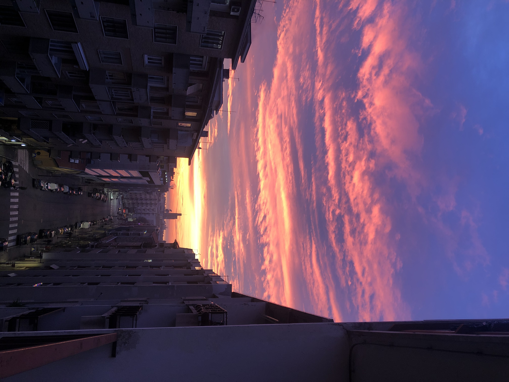
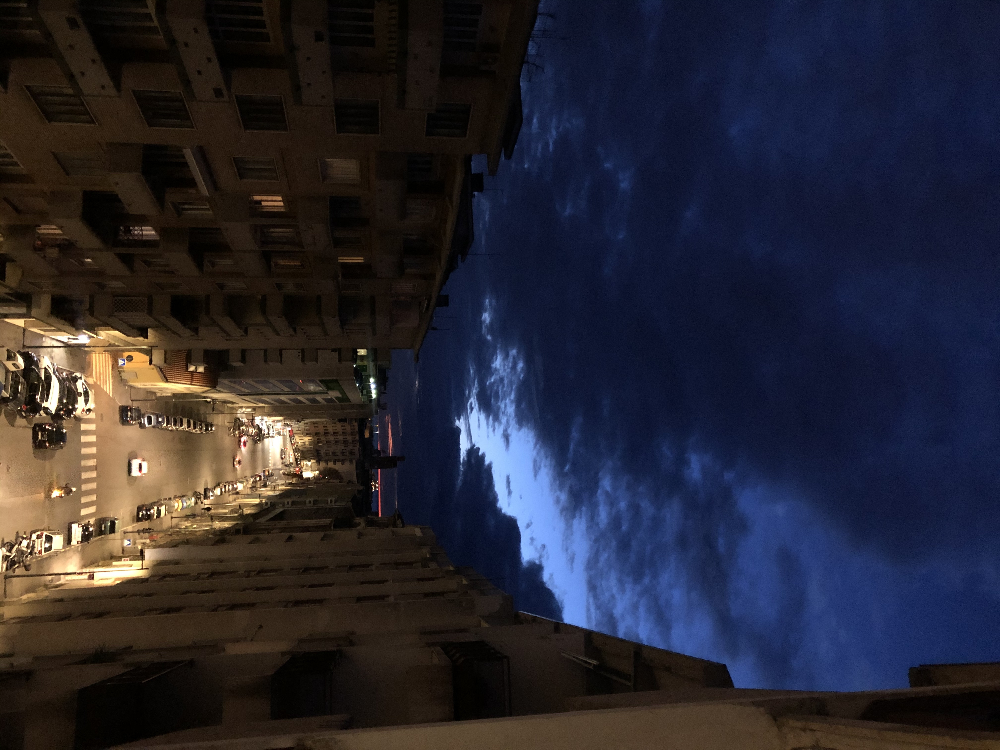
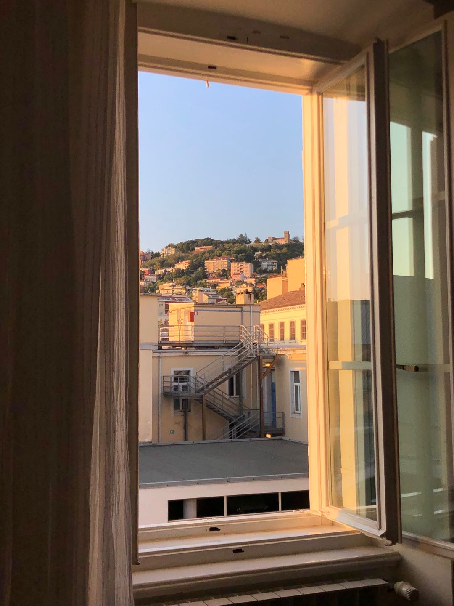
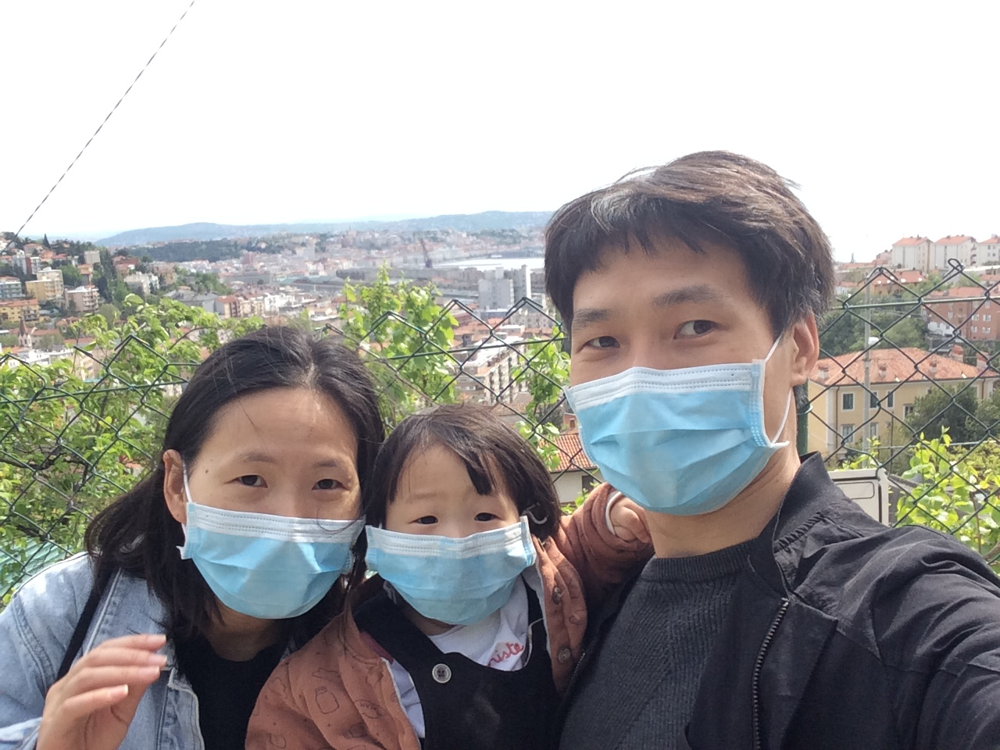
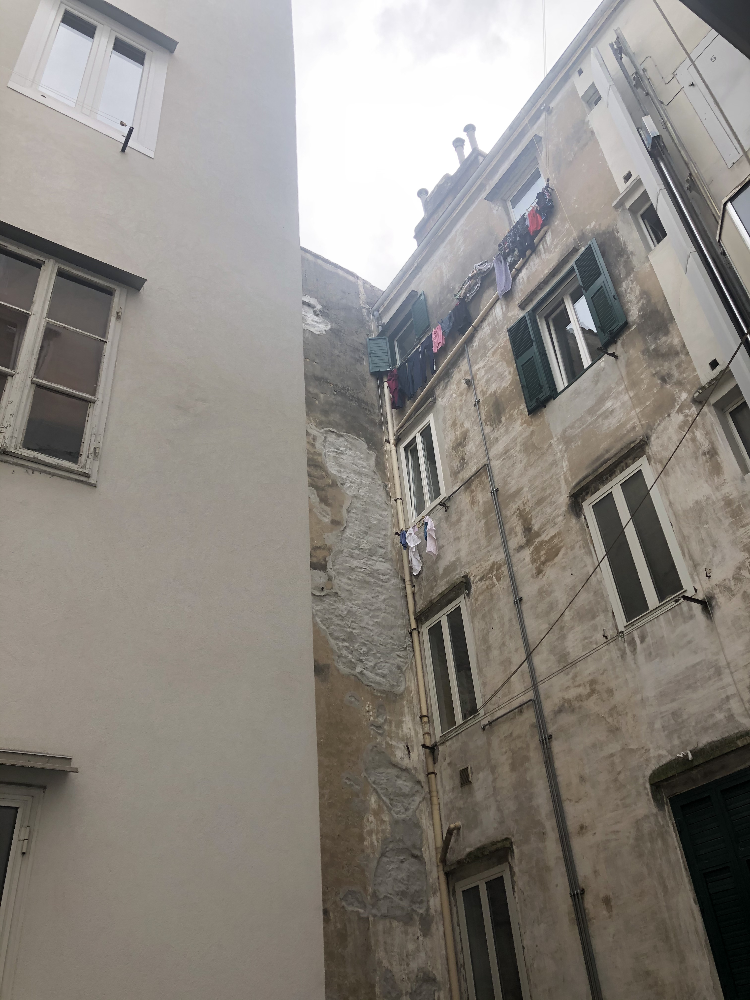

11
balcony photos
Calm down, sweetie! With the DISTANCE, we still have each other.
by 孙凯文.

守得云开见月明
by 宋琴.

“看不见的风景决定看得见的风景”——此心安处是吾家
“un paesaggio invisibile condiziona quello visibile”
where you are, where home is.
“un paesaggio invisibile condiziona quello visibile”
where you are, where home is.
by 许晶.

夕阳无限好
Tramonto è infinitamente buono
Tramonto è infinitamente buono
by 张文博.

黎明前的黑暗
L'oscurità prima dell'alba
L'oscurità prima dell'alba
by 张文博.

灰色满园关得住
by 张甲举.

未来可期
by 张翠莲.

安逸
by 徐一丹.

by 沈叶.

Trieste复工第一人
by 王艺旭.

一家三“口”
by 罗壹凡.

我要去超市
by 罗壹凡.

囚
by 聂继华.

by 韩笑.

孩童的眼中尽是美好
by 乌迪内 于雪婷.

窗外
by 特伦托 史大千.

云浮瑶玉色，皓首碧穹巍
by 特伦托 申强.

驶向春天的TRENTO
by 特伦托 申强.